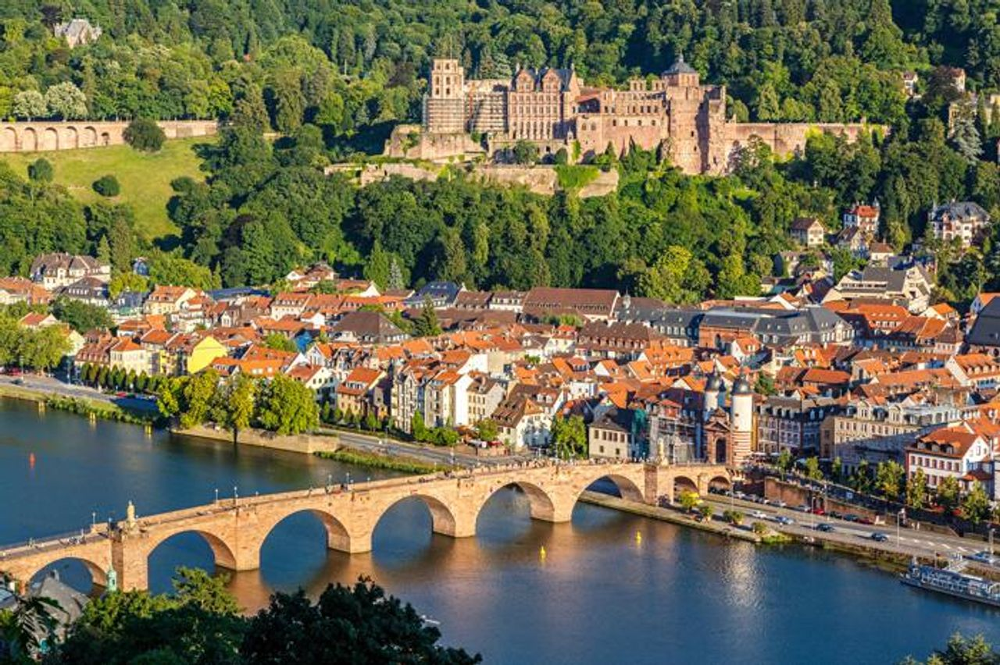

Heidelberg – miasto na prawach powiatu w Niemczech, w kraju związkowym Badenia-Wirtembergia, w rejencji Karlsruhe, w regionie Rhein-Neckar. Heidelberg leży po obu stronach Neckaru, na zboczach południowego Odenwaldu, u podnóża góry Königstuhl. Jest siedzibą powiatu Rhein-Neckar-Kreis, jednak do niego nie należy. Liczba mieszkańców wynosi 162 273 (31 grudnia 2022), a powierzchnia miasta 108,83 km². Miasto słynie ze swojego pięknego położenia i łagodnego klimatu[2].